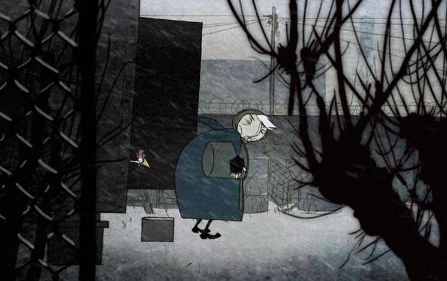

Saturday, February the 1st, 2014
back to: title, date or indexes
Here is a date for the diaries of those of you lot who live in or around London. Next Saturday sees the London première of Sharon Smith's film adaptation of A Recipe For Gruel at the BFI Southbank. It is being shown as part of the British Animation Awards – programme 2, on 8 February at 6.20 p.m. Mr Key will be in attendance (incognito, of course). Don't miss the cinematic event of this, or any other, century!
